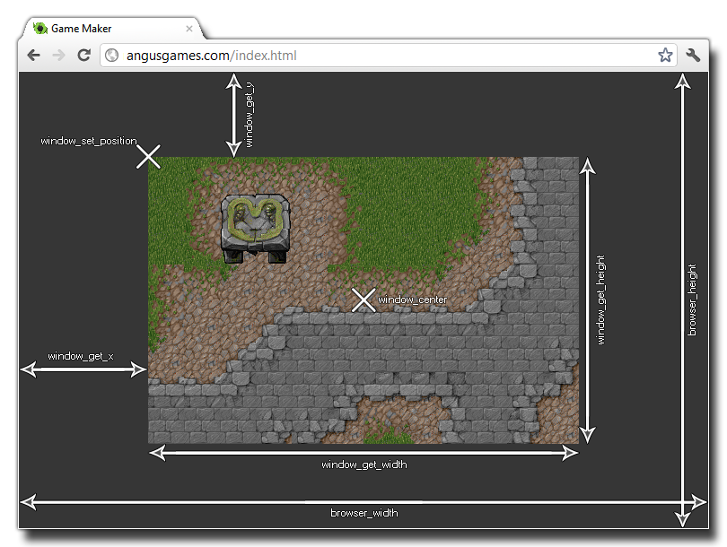

browser_height
Returns: Real
This variable holds the height (in pixels) of the browser the
game is being run in. If no browser is present then the window size
is returned. the following image illustrates how this variable
relates to the rest of the positioning functions available through
the Window
Functions.

if browser_height > window_get_height() ||
browser_width > window_get_width()
{
var xx, yy;
if browser_width > window_get_width()
{
xx = (browser_width -
window_get_width()) / 2;
}
else
{
xx = 0;
}
if browser_height > window_get_height()
{
yy = (browser_height -
window_get_height()) / 2;
}
else
{
yy = 0;
}
window_set_position(xx, yy);
}
The above code checks the width and height of the browser to see if either is larger than the current window width and height. If either of them are, it then calculates a new position for the game window within the browser.